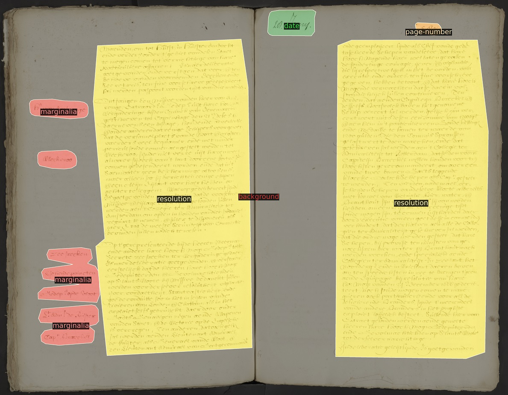

Unieke software om historische teksten te transcriberen nu opensource beschikbaar
Het KNAW Humanities Cluster in Amsterdam maakt de transcriptie-software Loghi per direct opensource beschikbaar. De software is in samenwerking met het Nationaal Archief in Den Haag speciaal ontwikkeld om gescande historische documenten digitaal leesbaar en doorzoekbaar te maken.
Voor onderzoekers is het ontcijferen van handschriften in archieven vaak een flinke uitdaging, of het nu gaat om zeventiende-eeuwse handschriften, of veel modernere, zoals uit de periode van de Tweede Wereldoorlog. Transcriptie-software maakt dit veel eenvoudiger door er een digitale tekst van te maken. Tegelijkertijd biedt die transcriptie ook het onderzoek nieuwe mogelijkheden, omdat gedigitaliseerde tekst doorzoekbaar is. Het vinden van alle vermeldingen van bijvoorbeeld ‘suiker’ in een archief van miljoenen archiefstukken kost slechts een paar minuten in plaats van vele jaren. Tel uit je winst. Maar dan moet de transcriptie-software wel betrouwbaar zijn.
De transcriptie-software Loghi, zo bleek uit testen, is uitermate nauwkeurig en geeft tot minstens 96% correcte transcripties. Hierdoor is Loghi geschikt voor erfgoedorganisaties die historische, slecht leesbare teksten beschikbaar en doorzoekbaar willen maken voor bezoekers en onderzoekers. De software is opensource, wat betekent dat het beschikbaar is voor iedereen, maar ook dat het kan worden aangepast aan de eigen specifieke behoeften.
Baseline
Loghi is in staat om uiteenlopende teksten te ontcijferen of het nu handgeschreven, getypt of gedrukt is. De software doet dat in twee stappen. Eerst stelt het vast op welke lijn een regel loopt, de zogenaamde baseline. Op die manier weet de software welke zinnen bij elkaar horen. Daarna zet Loghi het plaatje van de tekst om naar digitale tekst. Door deze twee stappen kan Loghi niet alleen rekeninghouden met aantekeningen in de kantlijn of tussen regels, maar ook met teksten die verticaal zijn geschreven in bijvoorbeeld tabellen. De software herkent al die verschillende vormen van tekst en geeft de digitale weergave daarvan in de juiste context weer.

Lage foutmarge
Loghi is in de afgelopen zes jaar ontwikkeld door Rutger van Koert van de afdeling Digitale Infrastructuur van het KNAW Humanities Cluster (HuC). Van Koert: ‘We gebruiken machine learning om vast te stellen welke letter er precies is opgeschreven. Daarvoor breekt Loghi een scan van een document op in plaatjes op verschillende niveaus: van heel klein op het niveau van pixels via letters en zinnen tot het niveau van paragrafen. De software vat stapsgewijs – steeds op een iets hoger niveau – samen wat de visuele kenmerken zijn en kiest uiteindelijk op basis daarvan de meest waarschijnlijke letter. De software kan ook doorhalingen en beschadigingen negeren en zo nog accurater vaststellen waar welke letters staan. Wanneer de software getraind is op een specifieke collectie dan wordt de foutmarge teruggebracht tot onder de 4%. Dat is echt heel laag.’
Prototype
De software is deels gebaseerd op opensource software en is met succes toegepast in de grote projecten REPUBLIC en GLOBALISE. Deze projecten van het Huygens Instituut, een van de oprichters van het HuC, maken respectievelijk de Resoluties van de Staten-Generaal en verslagen van de VOC digitaal toegankelijk. Van de Resoluties van de Staten-Generaal is al een prototype met getranscribeerde teksten beschikbaar. In de komende jaren komen de getranscribeerde teksten online beschikbaar. De oorspronkelijke bronnen liggen bij het Nationaal Archief (NA) in Den Haag. Van Koert is daarom ook anderhalf jaar bij het NA gedetacheerd geweest.
Loghi nog beter maken
Loghi is per direct voor iedereen toegankelijk op GitHub en draagt zo bij aan een nationale en internationale open science infrastructuur. ‘Wij vinden het belangrijk dat deze software vrij gedeeld wordt, zodat ook ontwikkelaars van andere organisaties in het vakgebied ermee aan de slag kunnen en hierop kunnen voortborduren. Wij nodigen iedereen van harte uit om een bijdrage te leveren en gezamenlijk Loghi nog beter te maken’, zegt Menno Rasch, directeur Digitale Infrastructuur van het KNAW Humanities Cluster.
In de software zijn bepaalde settings aan te passen zodat op elke tekst het beste resultaat behaald kan worden. Om een zo goed mogelijk resultaat te behalen op nieuwe datasets blijven wel testen nodig waarin de uitkomst van de aangepaste code wordt vergeleken met teksten die door mensen zijn gecontroleerd.
Samenwerking KNAW Humanities Cluster en het Nationaal Archief
Het KNAW Humanities Cluster en het Nationaal Archief zullen Loghi samen verder blijven door ontwikkelen om gedigitaliseerde collecties leesbaar en doorzoekbaar te maken. Dat is nu vastgelegd in officiële samenwerking, waarin ook het Nationaal Archief een ontwikkelaar gaat aannemen. ‘We hebben al 50 miljoen documenten gescand en zullen de komende jaren nog eens 50 miljoen pagina’s digitaliseren. Door deze veelal handgeschreven en getypte documenten met Loghi machineleesbaar te maken, kunnen gebruikers de documenten veel gemakkelijker doorzoeken’, zegt Liesbeth Keijser, projectleider digitalisering bij het Nationaal Archief.